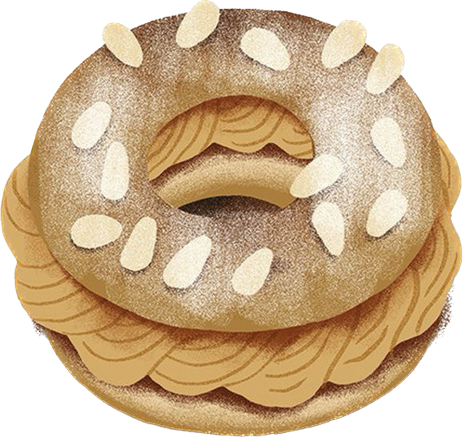

Paris-Brest

Ingredients pâte à choux
 Lait: 25cl
Lait: 25cl Eau: 25cl
Eau: 25cl Sel: 10g
Sel: 10g Sucre: 25g
Sucre: 25g Beurre: 250g
Beurre: 250g Farine: 275g
Farine: 275g Oeuf: 500g ou 10 oeufs
Oeuf: 500g ou 10 oeufs Amande hachées: 120g
Amande hachées: 120g
Ingredients crème pralinée
- Beurre: 240g
- Praliné: 100g
- Crème pâtissière froide: 300g
Ingredients montage
 Sucre-glace
Sucre-glace- Amande sablées
Preparation pâte a choux:
- 1. Réunir le lait, l’eau, le sel, le sucre et le beurre. Porter à ébullition, et ajouter hors du
feu la
farine. Bien mélanger et dessécher sur le feu. Dès que la pâte se détache des parois du récipient, elle
est prête. La transvaser dans la cuve du batteur. Briser les œufs entiers au fouet pour faciliter
l’incorporation, en verser les trois quarts dans le batteur en fonctionnement, puis ajouter le reste
quand ils sont incorporés. Si la pâte semble trop ferme, ajouter du lait chaud.
- 2. Introduire l’appareil dans une poche munie d’une douille cannelée de 10 mm. Dessiner sur une
feuille de
papier sulfurisé un cercle de 20 cm de diamètre. Déposer la pâte sur le papier en suivant le contour du
cercle.
- 3. Parsemer d’amandes hachées le disque de pâte. Cuire 15 minutes à 220 °C à four statique.
Terminer la
cuisson à 170 °C à four ventilé. À la sortie du four, déposer la couronne sur une grille. Laisser
refroidir.
Préparation crème pralinée:
- 1. Lisser la crème pâtissière. Travailler le beurre en pommade, ajouter le praliné. Incorporer
ensuite, en plusieurs fois, la crème pâtissière. Introduire cette crème dans une poche munie d’une
douille cannelée de 8 mm de diamètre.
Montage et présentation:
- 1. Couper à mi-hauteur le Paris-Brest en deux couches horizontales. Garnir la partie inférieure
de crème pralinée de façon régulière et harmonieuse. Poser la partie supérieure sur la crème pour
reconstituer l’entremets. Saupoudrez de sucre glace. Piquez dans la crème quelques amandes sablées.